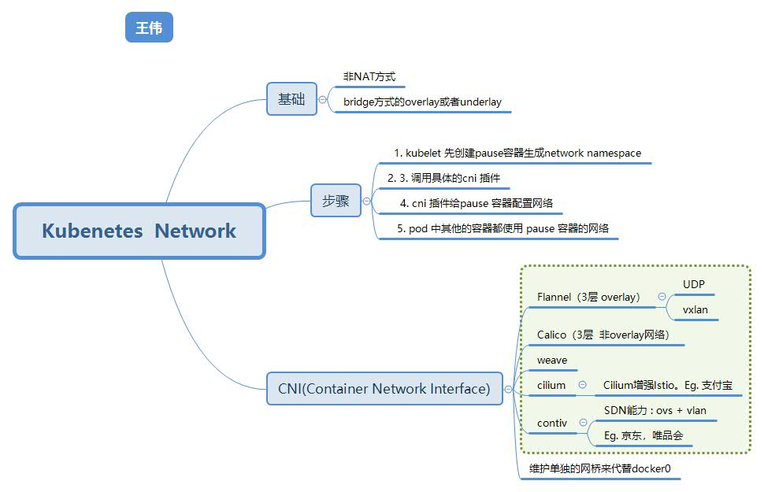
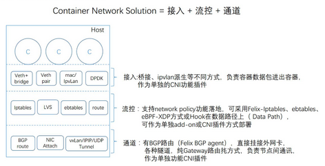
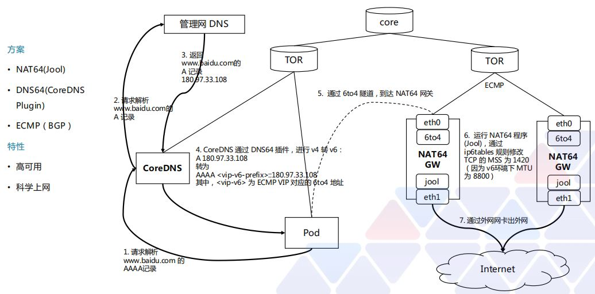

一. 容器和容器之间的网络 #
- 使用Docker的一种网络模型：–net=container
- 每个Pod容器有有一个pause容器
二. Pod与Pod之间的网络 #
2.0 Overview #

2.1 同节点pod通信 #
基础: 网桥 bridge
通过网桥通信
 图2. 同节点pod通信
图2. 同节点pod通信
2.2 不同节点中的Pod通信（跨主机网络通讯） #
2.2.1 Overlay (Flannel方案) #
- flannel-UDP模式(三层overlay)
- 原理： fannelId进程封装/解开虚拟网卡docker0,fannel0的数据; 三层的overlay网络;
- 组件： TUN设备是3层的虚拟网络设备 ; fannel0
- 劣势: 三次用户态和内核态切换 ; 性能差， 已弃用
 图3. flannel-UDP模式
图3. flannel-UDP模式
 图4. flannel-UDP模式
图4. flannel-UDP模式
- flannel-vxlan模式(两层虚拟网络)
- VXLAN 的覆盖网络的设计思想是：在现有的三层网络之上，“覆盖”一层虚拟的、由内核 VXLAN 模块负责维护的二层网络，使得连接在这个 VXLAN 二层网络上的“主机”（虚拟机或者容器都可 以）之间，可以像在同一个局域网（LAN）里那样自由通信
- 组件： VTEP（VXLAN Tunnel End Point）设备; fannel.1; 组成一个虚拟的两层网络
- 优势： 进行封装和解封装的对象，是二层数据帧（Ethernet frame）; 而且这个工作的执行流程，全部是在内核里完成的（因为VXLAN本身就是内核中的一个模块）; 主流的网络容器方案。
 图5. flannel-vxlan模式
图5. flannel-vxlan模式
 图6. flannel-vxlan模式
图6. flannel-vxlan模式
2.2.2 纯3层网络方案 #
Flannel host-gw模式

-
host-gw 模式工作原理： 其实就是将每个 Flannel 子网（Flannel Subnet，比如：10.244.1.0/24）的“下一跳”，设置成了该子网对应的宿主机的 IP 地址。 也就是说，这台“主机”（Host）会充当这条容器通信路径里的“网关”（Gateway）。这也正是“host-gw”的含义。
-
核心 路由规则： <目的容器 IP 地址段> via <网关的 IP 地址> dev eth0
$ ip route
...
10.244.1.0/24 via 10.168.0.3 dev eth0
- 优势： 根据实际的测试，host-gw 的性能损失大约在 10% 左右，而其他所有基于 VXLAN“隧道”机制的网络方案，性能损失都在 20%~30% 左右。
Calico
-
原理:
- 基于iptable/linux kernel包转发;
- 根据iptables规则进行路由转发;
- 非overlay, Calico 没有使用 CNI 的网桥模式;
-
核心
- 路由规则： <目的容器 IP 地址段> via <网关的 IP 地址> dev eth0
-
组件:
- 路由规则; iptables的配置组件Felix;
- 路由广播组件BGP Speaker;
Host Network模式
- 容器的网络和宿主机的网络打平，在同一层;
- underlay方案;
2.2.3 总结: #
- flannel-UDP模式和flannel-vxlan模式都可以称作"隧道"机制；都是是overlay的。
- 普适性最强 flannel-VxLan (OpenShift使用)
- 二层可直连可选用Calico / Flannel host-gw
| / | overlay（隧道） | underlay（路由） |
|---|---|---|
| L2 | Vxlan(大二层 通讯双方在同一逻辑网段内) | IPvlan L2模式 Macvlan 9 |
| L3 | flannel-UDP（类似L2 overlay， 在节点上增加一个网关） | IPvlan L3模式 flannel host-gw（不能跨两层网络） Calico BGP组网方式（大三层） |
三. Pod与Service之间的网络 #
四. Internet与Service之间的网络 #
4.1 Service到Internet #
iptables执行源NAT( SNAT )
4.2 Internet到Service #
五. 网络隔离 多租户 #
NetworkPolicy
六. 访问公网[99] #
通过NAT访问公网 #

参考: #
-
1.第13 章 ： Kubernetes网络概念及策略控制 CNCF × Alibaba 云原生技术公开课
-
8.K8s网络模型 阿里 加多 ***
-
趣谈网络协议 刘超
- 《30容器网络之Flannel：每人一亩三分地》
- 《31容器网络之Calico：为高效说出善意的谎言》
-
深入剖析Kubernetes 张磊
- 《32 浅谈容器网络》
- 《33 深入解析容器跨主机网络》
- 《34 Kubernetes网络模型与CNI网络插件》
- 《35 解读Kubernetes三层网络方案》